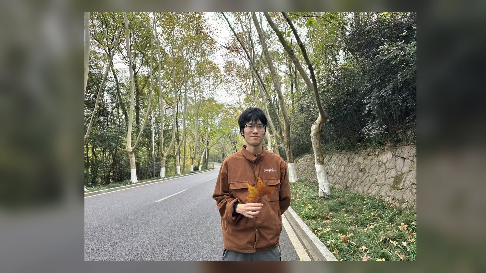
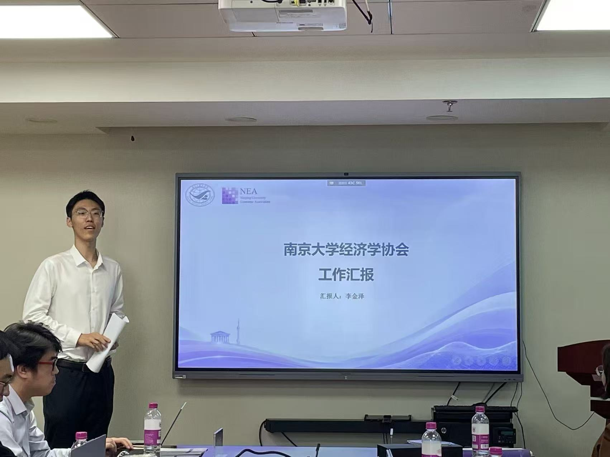

论文交流
定期开展组会，汇报感兴趣的论文或者是个人的研究思路及方法。
01 / ABOUT US
定期开展组会，汇报感兴趣的论文或者是个人的研究思路及方法。
邀请学长姐及较高年级协会成员，定期开展经验分享或讲座，为较低年级的成员提供包括学术、保研、工作方面的各项指导。
不定期开展各类活动，包括与外校的合作活动、论文论坛、公益活动与协会内部团建等。
ASSOCIATION PROFILE
协会旨在以南京大学商学院经济学系为基础，集合有志于学术研究的同学们，并在良好的讨论与学术活动中提升参会同学的学术水平及答辩水平，形成良好的学术发展引导与合作交流机制。这一主旨契合当前南京大学商学院对于本科生及以上学术研究活动的鼓励与支持。论文学习小组暂定为用协会的形式开展以便于长期运行。
协会整体架构分为理论经济学部和应用经济学部，各部门下属子学科。理论经济学部暂时包含宏观经济学和微观经济学组；应用经济学部包括金融学组、产业经济学组、国际贸易组和区域经济学组。具体细节与人员参考协会架构表格。由于创立时期的特殊性，实行创始两会长制度，后将改为单会长制；分设两位副会长，分别负责理论经济学部和应用经济学部的相关事务。会长及副会长在初创期结束后，实行报名及推选制度，负责相关部门的运营。
02 / OUR PEOPLE
 照片
照片会长 · 理论经济学部 · 宏观经济学小组
会长 · 应用经济学部 · 区域经济学小组
副会长 · 理论经济学部 · 微观经济学小组
副会长 · 应用经济学部 · 产业经济学小组

照片成员 · 理论经济学部 · 微观经济学小组
成员 · 理论经济学部 · 微观经济学小组
成员 · 理论经济学部 · 微观经济学小组
成员 · 理论经济学部 · 宏观经济学小组
成员 · 理论经济学部 · 宏观经济学小组
成员 · 理论经济学部 · 宏观经济学小组
成员 · 应用经济学部 · 金融学小组
成员 · 应用经济学部 · 金融学小组
成员 · 应用经济学部 · 金融学小组
成员 · 应用经济学部 · 金融学小组
成员 · 应用经济学部 · 产业经济学小组
成员 · 应用经济学部 · 产业经济学小组
成员 · 应用经济学部 · 产业经济学小组
成员 · 应用经济学部 · 国际贸易学小组
成员 · 应用经济学部 · 国际贸易学小组
我们相信，多元的背景会带来更好的问题。查看 19 位成员 →
03 / UPCOMING EVENTS

NEA · SEMINAR0805 / INTERNAL ARCHIVE
NJU ECONOMICS ASSOCIATION